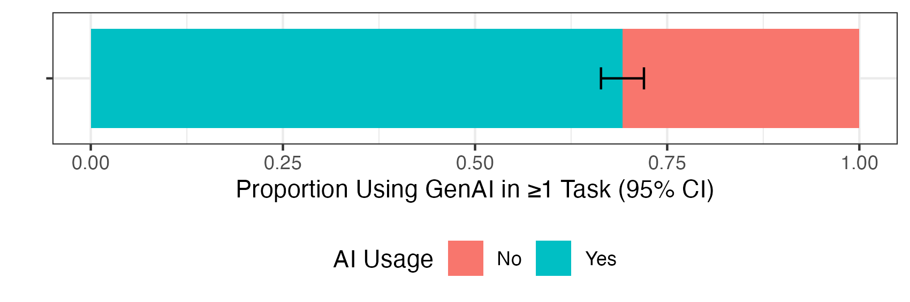
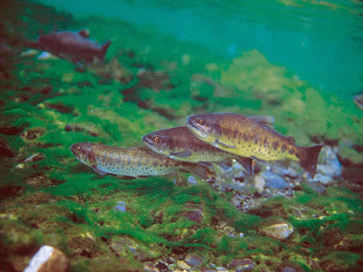
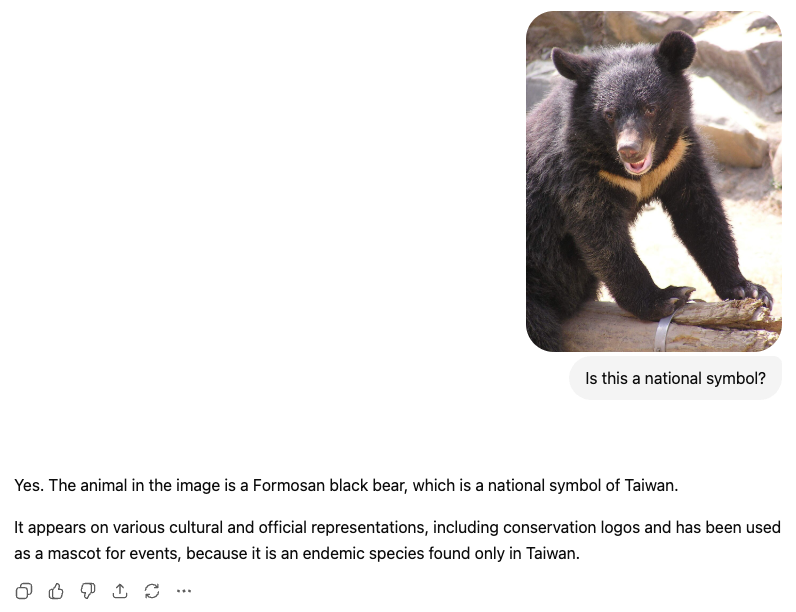
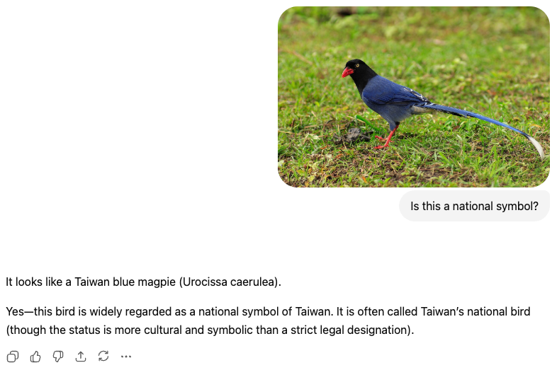
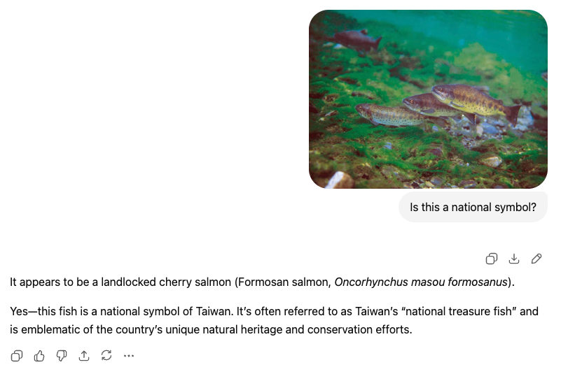
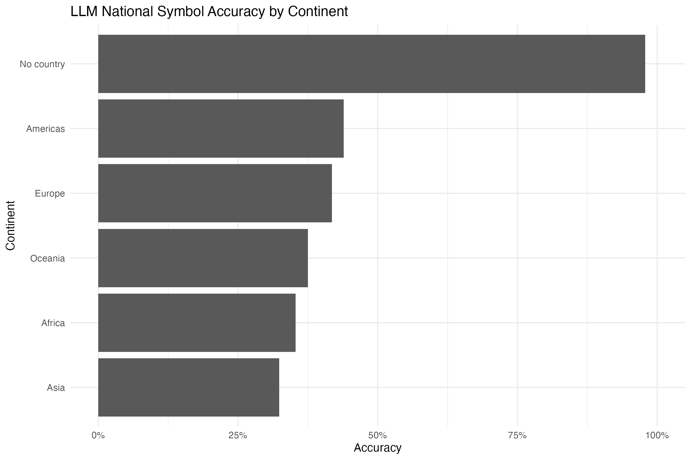
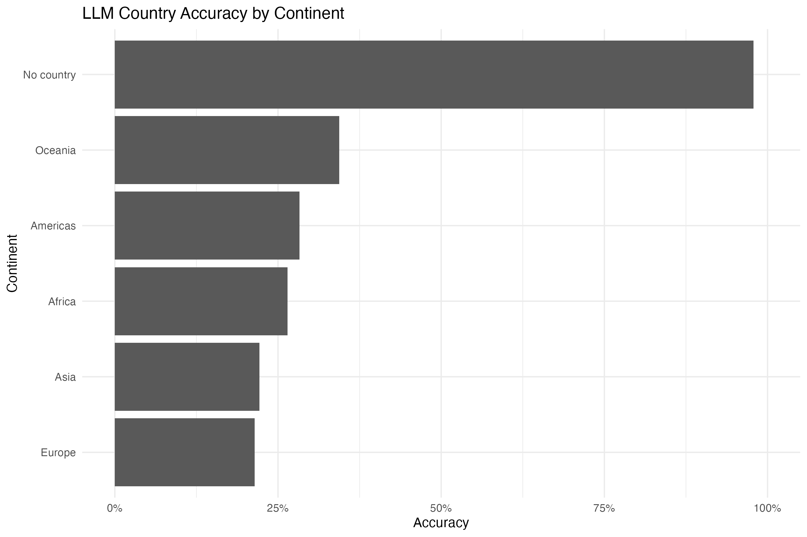

Can Machines Imagine Communities?
Promises and Limits of GenAI in Nationalism Research
Justin Chun-ting Ho
National Yang Ming Chiao Tung University, Taiwan
Slides available at: http://bit.ly/asen2026
Acknowledgement
This paper was inspired by my collaboration with Rebecca Ping Yu, Yu-syuan Guo, and Ting-hsi Yeh in the project The social use and its influence of the smartphone: Screenomics-based mixed methods
AI has taken social sciences like a storm

(Preprint available at: https://doi.org/10.31235/osf.io/dncuf_v1)
AI is a Stochastic Parrots 🦜
An [LLM] is a system for haphazardly stitching together sequences of linguistic forms it has observed in its vast training data, according to probabilistic information about how they combine, but without any reference to meaning: a stochastic parrot.
On Stochastic Parrot
- LLM is trained on massive datasets (aka. the Internet)
- The heart of LLM is Next-Token Prediction:
The cat sat on the _____.
Implications
- AI has an extremely large knowledge base
- AI is good at analysing things that has been seen before, but struggles for anything unseen
- AI does not really "understand" things, it is just probablity
Proposition:
AI is useful when you analyse things that requires
high amount of background knowledge, have happened before, and do not require deep understanding.
Two Reasons why AI can be useful
1. Studying Nationalism is very Difficult
Is this a national symbol? If so, which country?
Is this a national symbol? If so, which country?
Is this a national symbol? If so, which country?

Hot take:
Human beings are not very good at studying nationalism
Identifying nationalism requires a lot of background knowledge (cultural, political, lingusitic, etc.). Most of us do not have enough knowledge to study most countries.
ChatGPT got it 10/10



Identifying National Symbol: Human vs LLM
- Dataset of 1797 images of national symbol from Wikipedia and 2000 images of random objects from Common Objects in Context
- Automated classification with GPT-5.4
- Hired 130 crowdworker from Prolific to annotate a sample of 420 images (1300 annotations in total, majority rule)
Takeaways
- AI is not perfect, but human beings are not doing a very good job either
- Geographical variations in performance
- GPT annotation costed $2, crowdworker costed $120
2. Nationalism Studies is Not Very Diverse
Technical Notes
- Dimensions API to obtain all articles from Nations and Nationalism, Ethnic and Racial Studies, and Nationalities Papers
- Automated classification with GPT-5.4 to extract the countries that a study is about
- Full validation not yet completed, do not cite me yet
Diversity in Nationalism Studies
- Studying nationalism is very difficult
- The inclusion/exclusion of a country is both:
- limited by our background knowledge
- driven by our personal experience
- I think AI can help
(with a BIG caveat)
AI has more equal performance across regions

(But still observable discrepancies across regions)
For complex task, the performance is not quite there yet

(Also still observable discrepancies across regions)
1. Depends on the complexity of the task, AI may or may not be useful, for now.
2. AI has the potential to:
- make studying nationalism (a tiny bit) easier
- make nationalism studies more diverse*
AI is the future,
but the future is not quite here yet.
3. AI is not a silver bullet, reflective judgment is the key.
Do we need AI for everything?
Did I mention the ethical issues too?
Thank You!
Bluesky: @justinho.bsky.social
LinkedIn: justinchuntingho
Github: justinchuntingho
Email: jcho@nycu.edu.tw